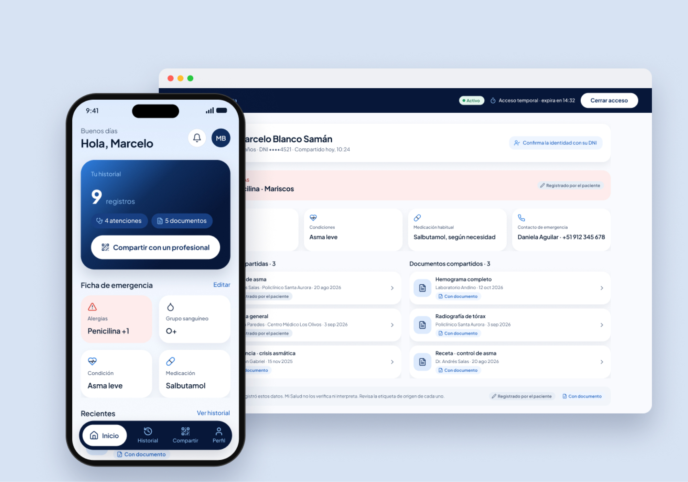
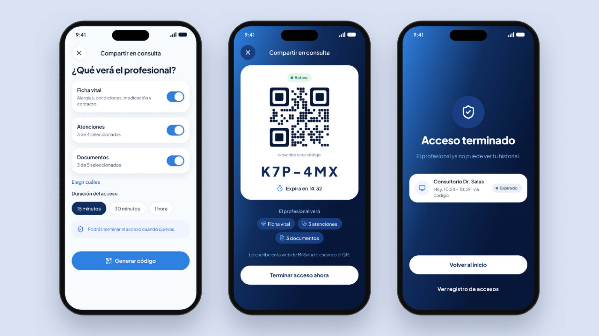
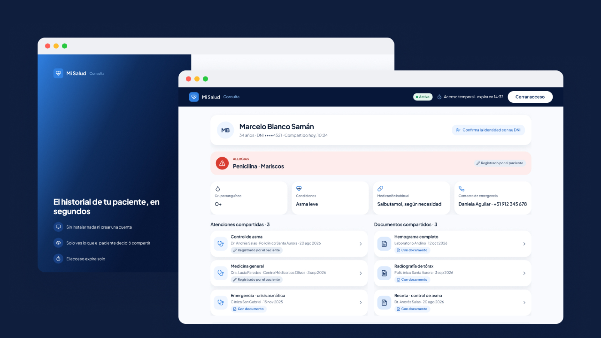
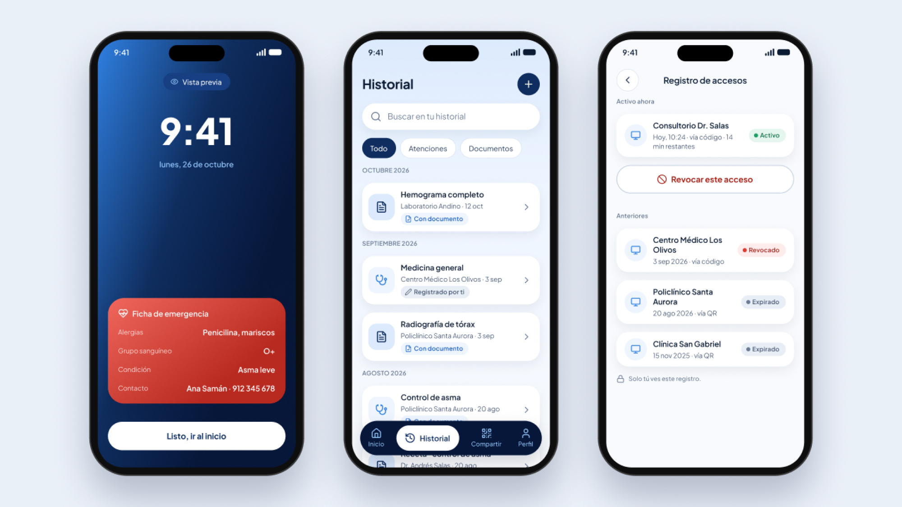
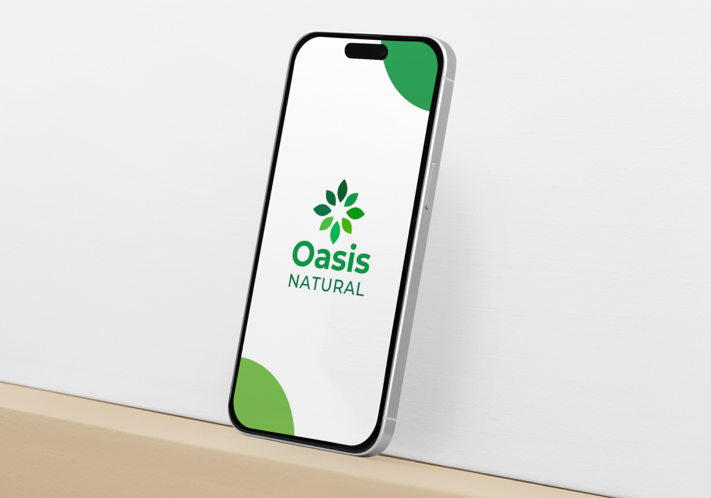

Mi Salud
Un historial médico personal y portátil, que el paciente arma y comparte con cualquier profesional mediante un código temporal o un QR.
Rol
Diseñador UX/UI · proyecto individual
Tipo
Proyecto personal · solución hipotética
Plataformas
App móvil (paciente) y web (profesional)
Año
2026 · Perú

(01) Contexto y problema
El punto de partida
Los antecedentes médicos de una persona suelen quedar repartidos entre documentos en papel, recuerdos y distintos sistemas de salud. Recuperarlos y compartirlos cuando hacen falta —al preparar una consulta, al cambiar de establecimiento o en una emergencia— puede ser difícil.
Pregunta de diseño
¿Cómo podría un paciente llevar su historial a cualquier consulta y compartirlo de forma segura, solo por el tiempo necesario?
(02) Investigación
Tres experiencias, una misma pregunta
Origen
01
Llegar a una especialidad
Para conseguir una cita en EsSalud tuve que pasar primero por medicina general. Me pregunté si tener mis antecedentes a mano habría ayudado a orientar la atención.
02
Las vacunas de mi infancia
Quise saber qué vacunas recibí de niño y no tenía esa información ni podía depender de mis padres para recordarla.
03
Una emergencia
Si sufro un accidente y quedo inconsciente, ¿cómo conoce el personal de salud mis alergias, medicamentos o grupo sanguíneo?
Método
Exploración directa
Qué hicimos
Revisamos qué información médica se podía recuperar desde Minsa Digital y EsSalud: grupo sanguíneo, recetas, diagnósticos y atenciones.
Quiénes
Tres personas: yo y dos participantes, cada uno con sus propias cuentas.
Cuándo
Octubre de 2026
Investigación secundaria
Marco normativo
RENHICE, el Registro Nacional de Historias Clínicas Electrónicas (Ley N.º 30024, modificada por el D. S. N.º 020-2025-SA).
Avance técnico
Comunicado del MINSA sobre la Conectatón 2026: pruebas de intercambio de información clínica en entornos controlados.
Preparar una consulta
Artículo de MAPFRE Perú sobre qué antecedentes llevar a una consulta médica.
Hallazgos
01
La información esperada no siempre aparece
Los tres encontramos registros ausentes. En mi caso, no figuraban dos atenciones de emergencia (EsSalud y una clínica privada) y mis vacunas solo llegaban a 2022.
02
El papel sigue siendo una fuente
Los dos participantes conservaban recetas o información de medicamentos en formato físico.
03
La interoperabilidad avanza, pero no lo explica todo
Existe un marco normativo y pruebas técnicas de intercambio, pero no determinamos por qué faltaba cada registro.
04
Una consulta pide datos de varias categorías
Antecedentes, cirugías, resultados, vacunas, alergias y medicamentos con sus dosis: información que hoy está dispersa.
Lo que sostiene la investigación y lo que sigue abierto
Podemos sostener
Tuve dificultades para recuperar mi propia información médica.
Dos participantes no encontraron toda la información que buscaban.
Parte de su información médica se conservaba en papel.
Perú tiene un marco normativo para la interoperabilidad de historias clínicas.
Sigue abierto
Cuántas personas en Perú viven este problema.
Por qué faltaba cada registro.
Si las personas mantendrían su historial actualizado por iniciativa propia.
Si confiarían en una app privada para guardar datos médicos sensibles.
Conclusión
Hay una necesidad potencial de mejorar cómo las personas reúnen y comparten su información médica. Mi Salud es una hipótesis de solución, no una respuesta validada.
Por eso el producto se diseñó como un espacio que el paciente organiza, y no como una historia clínica oficial: distingue los datos que ingresa el usuario de los que tienen un documento de respaldo.
(03) Decisiones de diseño
Cinco decisiones que definieron el producto
01
De citas a un historial
Las citas no eran lo esencial. Pasaron a ser «atenciones» dentro de un historial que el paciente controla, sin importar dónde se atendió.
02
Código temporal, además del QR
Los médicos trabajan sobre todo en computadora, así que el profesional también puede acceder escribiendo un código en la web de Mi Salud.
03
Ficha de emergencia en la pantalla de bloqueo
Alergias, grupo sanguíneo, condiciones y medicación visibles sin desbloquear el teléfono, separados del historial completo.
04
Acceso que expira y se puede revocar
El paciente elige qué compartir, ve quién accedió y puede terminar el acceso en cualquier momento.
05
Sin prometer lo que no puede cumplir
Cada registro indica si lo ingresó el paciente o tiene documento. La app no interpreta resultados ni simula conexiones con EsSalud, SIS o clínicas.
(04) Flujo principal · Compartir en consulta
Del teléfono del paciente a la pantalla del médico
01
El paciente elige qué compartir
02
Muestra el código o el QR
03
El profesional lo ingresa en la web
04
El acceso vence o se revoca


(05) Pantallas clave

Ficha de emergencia en pantalla de bloqueo
Historial de atenciones y documentos
Registro de accesos
(06) Alcance y límites
01
Una solución hipotética
Es un ejercicio de diseño: no entrevisté a profesionales de la salud, y la vista del profesional se basa en supuestos.
02
La veracidad de los datos
Garantizar que los datos médicos sean reales requeriría la intervención del Estado, algo fuera del objetivo de este proyecto.
03
Pensado para crecer
La estructura de atenciones, documentos y accesos permite sumar nuevos tipos de registro sin rediseñar la app.
(07) Aprendizajes
Investigar el sistema de salud me enseñó algo como usuario: la mayoría no conocemos las leyes que nos protegen ni cómo pedir nuestra propia información.
Empecé pensando en una app para pedir citas desde cualquier lugar. Al investigar, entendí que pedir una cita no era el problema de fondo: lo es la capacidad de atención de los establecimientos, algo que una app no puede resolver. Lo que sí vale la pena normalizar es que cada persona tenga su información de salud a mano y pueda compartirla, porque hoy reunirla es complicado.
También vi que conectar la información entre seguros y establecimientos, públicos y privados, sigue siendo un reto tecnológico e institucional. Mientras ese proceso avanza, es el paciente quien carga con buscar, reunir y explicar sus propios datos.
Siguiente proyecto
